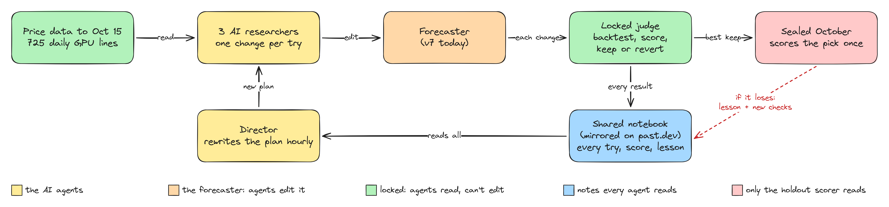
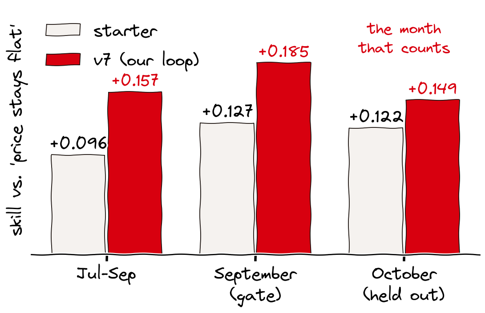
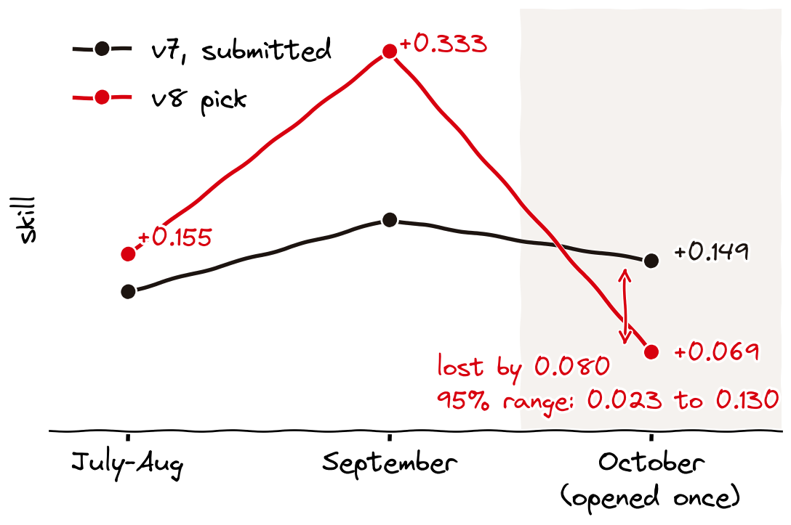

Step Function · GPU price forecasting
We didn't build a forecaster.
We built an AI scientist
that builds forecasters.
It doesn’t trust every improvement. It tests each change, keeps only reliable ones, and can decide to keep the old model.
The model · empirical quantiles, not regression
It forecasts from past price changes.
- Three numbers per forecast: 10th percentile (low), 50th (typical), 90th (high).
- The middle starts near the latest price.
- The range comes from real past changes: the series’ own, plus similar GPU sellers’.
- 1, 3 and 7 days ahead.

GPU prices stay flat, then jump.
The v7 loop · what it could tune
Seven settings, one per idea.
A proposer suggests one setting change per idea. An evaluator backtests it and keeps or kills it. A critic re-checks each keep on resamples. No code changes in v7.
The v8 loop · researchers edit code
The framework
This is the v8 loop
Only the forecaster file, each in its own sandbox.
The scorer, the data split and the keep rule.
Mirror and audit trail of the notebook. In the v7 loop, read limits kept October scores from the proposer; only the critic saw them.
The v8 loop · inside it
Four parts
What gets built.
- Median: essentially the last price (tiny drift and momentum terms).
- 10–90 range: past price changes, its own plus similar sellers’ at 0.7 weight.
- Recent changes count more (14-day half-life).
- 1, 3 and 7 days ahead.
Try changes.
- 3 AI agents.
- Each edits only the forecaster file, in its own sandbox.
- One code change per try.
- Mirror each try to past.dev as its own identity.
Keeps or reverts.
- Backtests each try on Jul–Sep: pinball loss vs “tomorrow = today”.
- A locked keep rule decides.
- Agents can’t edit it.
- Modal runs the backtests in parallel.
Plans each hour.
- Reads the shared notebook every hour: each try, score and lesson.
- Plans what to try next, who tries it, in what order, and what to drop.
- Can’t change the rules or override the judge.
v8.1 The same loop, with 3 new checks in the judge, written by a fresh director after v8 lost.
The judge · v8’s keep rule
A change stays only if it clears a locked bar.
• Gate skill up by at least +0.003
• Jul–Sep skill down by at most 0.005
• At least 60% of resamples favour it
• Near-ties go to the simpler code
Skill = 1 − pinball loss ÷ the loss of "tomorrow = today", pooled over every series, origin and horizon.
Pick once: the pick rule is written down before the held-out month is opened, then that month is scored once.
It is kept apart as the final test. No agent sees it while the loop runs.
What worked · v7, the submission
What worked in v7.
- Prices stay flat, then jump, so the latest price is a strong start.
- One real win: pool_weight 0.7, learning more from similar sellers.
- One trade: half_life_days 14 lifted September, but not July–September.
+0.149vs +0.122 starter
The range holds the real price 71% of the time.
Skill = improvement over “tomorrow’s price equals today’s”. October, 37 scored series, scored once after the pick was fixed.

What did not work · v7
Most changes were noise.
- The other 5 keeps (momentum_fit, drift_weight, min_samples) each moved skill by less than 0.001.
- After round 3 the search kept retrying the same few settings.
- The v7 gate kept any September gain above zero, so nearly useless changes got through.
Honest conclusion
The loop did not discover many major improvements. It found one useful change and showed that most other changes were noise.
v8 · one step in the v8 pick's chain
One real run
Researcher 2
+0.2181 → +0.2309
keep · 99% of resamples
“weekday: a line whose own move rate clearly differs by weekday (chi-square, 5%) re-prices on a schedule, so for h<7 learn only from its own windows starting on the origin's weekday”
“lines that re-price on fixed weekdays ([one seller's] spot: Mon/Tue 30-35% vs weekend 5%) need weekday-matched own windows for h1/h3: Sept +0.013, Jul-Sep +0.009, hyperscaler spot Sept .25->.32; gate it on a chi-square test, since filtering thin 8-week lines (rate cards, marketplace) by weekday loses”
Reading as of 2026-09-30, the proposer read 89 facts by the evaluator and 68 by the critic, to skip tried ideas. It got 0 of the 32 private October facts.
v8 · 144 code changes, 57 kept · September +0.185 → +0.333
On unseen October, v8 lost.
−0.080
+0.069 vs v7 +0.149 · 95% interval −0.130 to −0.023
It looked better on the months it practiced on and chased recent trends too hard. It overfit. The rule, written before October was opened, kept v7.
How: one run on October origins, 37 series; the interval comes from resampling series.

v8.1 · the fix
A loss writes its own post-mortem.
3 checks a fresh director proposed after the v8 loss
Big median moves outside the old 10–90 range may add at most 1% of flat loss.
No single series may cost more than 1% of flat loss.
Skill on the last 15 dev days may drop at most 0.02.
How: a dry replay of the v8 loss. All 3 reject the v8 pick, pass v7 and none of 14 earlier keeps. $0.78.
v8.1 · after healing
No longer worse. Not shown better.
+0.014
vs v7 · 95% interval −0.027 to +0.053
How: held-out origins Oct 16–30 (8 origins, 37 series), scored once. +0.123 vs v7 +0.109.
v8.2 (a short extra round today): nothing beat v8.1 by the pre-set rule. Why: the round was 20 minutes; both researchers found a real gain just under the bar, one quit early, one waited 7 minutes on a loop that was waiting for itself.
Dev only v8.3 (one hour, today): +0.026 on the gate over v8.1, clears the pre-set bar. Dev months only: not yet scored on unseen data, and v8 also looked great on dev.
The main achievement
The main achievement was not simply building a stronger model.
It was building a system that can test improvements fairly, detect overfitting, and know when to keep the existing model.
Use v7’s ranges today. The loop tells you when a new model has earned a switch.
github.com/swappysh/gpu-scientist
Team Step Function